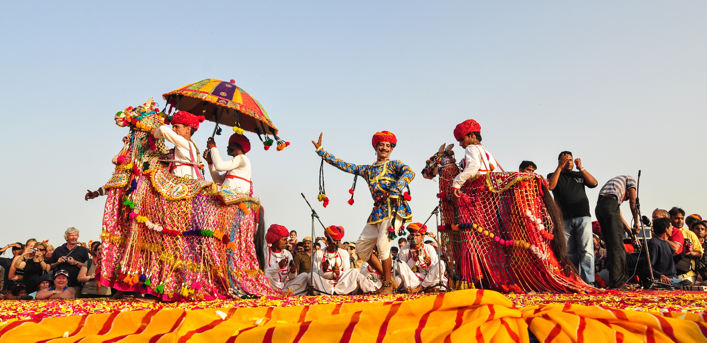

Welcome to Rajasthan!

Rajasthan, located in northwestern India, is known for its vibrant culture, majestic forts, palaces, desert
landscapes, and rich heritage. Often referred to as the "Land of Kings," Rajasthan's history and traditions are
reflected in its architecture, festivals, cuisine, and colorful attire.
Majestic Forts and Palaces: Rajasthan is famous for its impressive forts, palaces, and havelis (mansions) that
showcase Rajputana grandeur and architectural splendor. The Amber Fort in Jaipur, with its intricate carvings and
panoramic views of the Aravalli hills, is a prime example. Mehrangarh Fort in Jodhpur, perched on a hilltop,
offers a glimpse into Rajasthan's martial history. Udaipur's City Palace and the Lake Palace on Lake Pichola are
renowned for their exquisite architecture and scenic beauty.
Cultural Riches: Rajasthan's cultural tapestry is woven with folk music, dance, festivals, and traditional arts.
The state's folk music, performed with instruments like the dholak, sarangi, and harmonium, narrates tales of
valor, love, and devotion. Ghoomar, a traditional dance performed by women, and Kalbelia, associated with the
nomadic Kalbelia community, are iconic dance forms known for their graceful movements and vibrant attire.
Colorful Attire: Rajasthanis are known for their colorful traditional attire. Women wear vibrant ghagras (long
skirts), cholis (blouses), and odhnis (scarves), often embellished with intricate embroidery, mirror work, and
tie-dye techniques such as Bandhani. Men traditionally wear dhotis or pyjamas with kurtas and turbans (pagris)
adorned in various styles that denote regional and cultural identities.
Festivals: Rajasthan celebrates numerous festivals with great fervor, offering glimpses into its cultural heritage
and traditional rituals. The Pushkar Camel Fair, held annually in Pushkar, is a vibrant spectacle featuring camel
races, folk performances, and religious ceremonies. The Desert Festival in Jaisalmer showcases Rajasthani folk
music, dance, and camel polo amidst the stunning backdrop of sand dunes. Diwali, Holi, and Teej are also
celebrated with traditional rituals and community festivities across the state.
Cuisine: Rajasthan's cuisine is characterized by its rich flavors, use of spices, and traditional cooking methods.
Dal Baati Churma, a popular dish, consists of baked dough balls (baati) served with lentils (dal) and sweetened
wheat flour crumble (churma). Other specialties include Gatte Ki Sabzi, Laal Maas (spicy mutton curry), and
Bikaneri Bhujia (spicy snack). Rajasthani sweets like Ghevar, Malpua, and Mawa Kachori are enjoyed during
festivals and special occasions.
Handicrafts and Artisans: Rajasthan is renowned for its traditional handicrafts and artistic traditions. Jaipur is
famous for its gemstones, jewelry, and block-printed textiles like Bandhani and Sanganeri prints. The city of
Jodhpur is known for its leatherwork, while Udaipur specializes in miniature paintings and pottery. Rajasthan's
artisans create intricate works of art, including lac bangles, metal crafts, and traditional Rajasthani puppets
(Kathputlis), showcasing their skill and cultural pride.
Wildlife and Natural Beauty: Rajasthan's diverse landscapes range from the Thar Desert, with its sand dunes and
camel safaris, to wildlife sanctuaries like Ranthambore and Sariska, known for their tiger populations and
birdlife. The Keoladeo National Park in Bharatpur is a UNESCO World Heritage Site and a haven for migratory birds
during winter months, offering birdwatching opportunities amidst scenic wetlands.
In summary, Rajasthan's cultural richness, architectural marvels, festivals, cuisine, and traditional arts make it
a captivating destination for travelers seeking a glimpse into India's royal past and vibrant culture. Its forts,
palaces, and desert landscapes offer a unique blend of history, hospitality, and timeless beauty in the heart of
India's desert region.